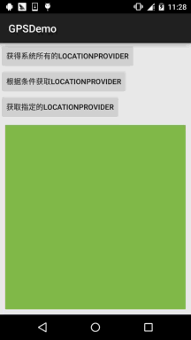
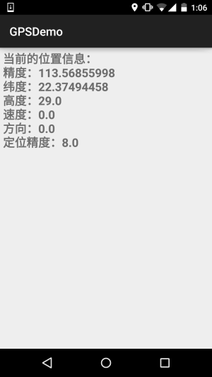
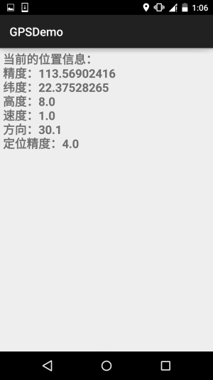
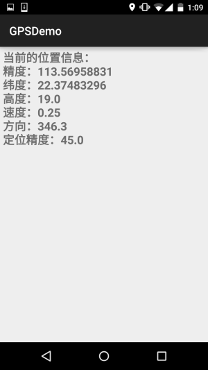
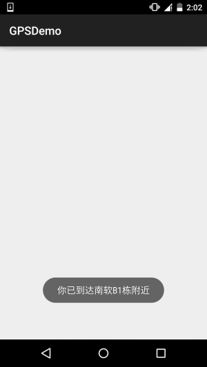
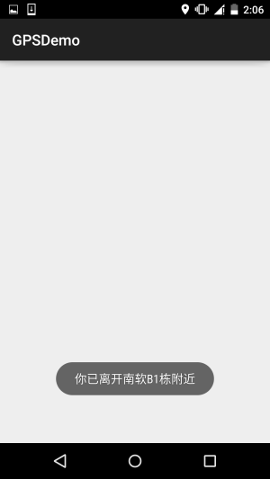

一、本节引言：
说到GPS这个名词，相信大家都不陌生，GPS全球定位技术嘛，嗯，Android中定位的方式 一般有这四种：GPS定位，WIFI定准，基站定位，AGPS定位(基站+GPS)；
本系列教程只讲解GPS定位的基本使用！GPS是通过与卫星交互来获取设备当前的经纬度，准确 度较高，但也有一些缺点，最大的缺点就是：室内几乎无法使用...需要收到4颗卫星或以上 信号才能保证GPS的准确定位！但是假如你是在室外，无网络的情况，GPS还是可以用的！
本节我们就来探讨下Android中的GPS的基本用法~
二、定位相关的一些API
1）LocationManager
官方API文档：LocationManager
这玩意是系统服务来的，不能直接new，需要：
LocationManager lm = (LocationManager)getSystemService(Context.LOCATION_SERVICE);
另外用GPS定位别忘了加权限：
<uses-permission android:name="android.permission.ACCESS_FINE_LOCATION"/>
好的，获得了LocationManager对象后，我们可以调用下面这些常用的方法：
- addGpsStatusListener(GpsStatus.Listener listener)：添加一个GPS状态监听器
- addProximityAlert(double latitude, double longitude, float radius, long expiration, PendingIntent intent)： 添加一个临界警告
- getAllProviders()：获取所有的LocationProvider列表
- getBestProvider(Criteria criteria, boolean enabledOnly)：根据指定条件返回最优LocationProvider
- getGpsStatus(GpsStatus status)：获取GPS状态
- getLastKnownLocation(String provider)：根据LocationProvider获得最近一次已知的Location
- getProvider(String name)：根据名称来获得LocationProvider
- getProviders(boolean enabledOnly)：获取所有可用的LocationProvider
- getProviders(Criteria criteria, boolean enabledOnly)：根据指定条件获取满足条件的所有LocationProvider
- isProviderEnabled(String provider)：判断指定名称的LocationProvider是否可用
- removeGpsStatusListener(GpsStatus.Listener listener)：删除GPS状态监听器
- removeProximityAlert(PendingIntent intent)：删除一个临近警告
- requestLocationUpdates(long minTime, float minDistance, Criteria criteria, PendingIntent intent)： 通过制定的LocationProvider周期性地获取定位信息，并通过Intent启动相应的组件
- requestLocationUpdates(String provider, long minTime, float minDistance, LocationListener listener)： 通过制定的LocationProvider周期性地获取定位信息，并触发listener所对应的触发器
2）LocationProvider(定位提供者)
官方API文档：LocationProvider
这比是GPS定位组件的抽象表示，调用下述方法可以获取该定位组件的相关信息！
常用的方法如下：
- getAccuracy()：返回LocationProvider精度
- getName()：返回LocationProvider名称
- getPowerRequirement()：获取LocationProvider的电源需求
- hasMonetaryCost()：返回该LocationProvider是收费还是免费的
- meetsCriteria(Criteria criteria)：判断LocationProvider是否满足Criteria条件
- requiresCell()：判断LocationProvider是否需要访问网络基站
- requiresNetwork()：判断LocationProvider是否需要访问网络数据
- requiresSatellite()：判断LocationProvider是否需要访问基于卫星的定位系统
- supportsAltitude()：判断LocationProvider是否支持高度信息
- supportsBearing()：判断LocationProvider是否支持方向信息
- supportsSpeed()：判断是LocationProvider否支持速度信息
3）Location(位置信息)
官方API文档：Location
位置信息的抽象类，我们可以调用下述方法获取相关的定位信息！
常用方法如下：
- float getAccuracy()：获得定位信息的精度
- double getAltitude()：获得定位信息的高度
- float getBearing()：获得定位信息的方向
- double getLatitude()：获得定位信息的纬度
- double getLongitude()：获得定位信息的精度
- String getProvider()：获得提供该定位信息的LocationProvider
- float getSpeed()：获得定位信息的速度
- boolean hasAccuracy()：判断该定位信息是否含有精度信息
4）Criteria(过滤条件)
官方API文档：Criteria
获取LocationProvider时，可以设置过滤条件，就是通过这个类来设置相关条件的~
常用方法如下：
- setAccuracy(int accuracy)：设置对的精度要求
- setAltitudeRequired(boolean altitudeRequired)：设置是否要求LocationProvider能提供高度的信息
- setBearingRequired(boolean bearingRequired)：设置是否要LocationProvider求能提供方向信息
- setCostAllowed(boolean costAllowed)：设置是否要求LocationProvider能提供方向信息
- setPowerRequirement(int level)：设置要求LocationProvider的耗电量
- setSpeedRequired(boolean speedRequired)：设置是否要求LocationProvider能提供速度信息
三、获取LocationProvider的例子
运行效果图：

由图可以看到，当前可用的LocationProvider有三个，分别是：
- passive：被动提供，由其他程序提供
- gps：通过GPS获取定位信息
- network：通过网络获取定位信息
实现代码：
布局文件：activity_main.xml：
<LinearLayout xmlns:android="http://schemas.android.com/apk/res/android"
android:layout_width="match_parent"
android:layout_height="match_parent"
android:orientation="vertical">
<Button
android:id="@+id/btn_one"
android:layout_width="wrap_content"
android:layout_height="wrap_content"
android:text="获得系统所有的LocationProvider" />
<Button
android:id="@+id/btn_two"
android:layout_width="wrap_content"
android:layout_height="wrap_content"
android:text="根据条件获取LocationProvider" />
<Button
android:id="@+id/btn_three"
android:layout_width="wrap_content"
android:layout_height="wrap_content"
android:text="获取指定的LocationProvider" />
<TextView
android:id="@+id/tv_result"
android:layout_width="match_parent"
android:layout_height="match_parent"
android:layout_margin="10dp"
android:background="#81BB4D"
android:padding="5dp"
android:textColor="#FFFFFF"
android:textSize="20sp"
android:textStyle="bold" />
</LinearLayout>
MainActivity.java：
public class MainActivity extends AppCompatActivity implements View.OnClickListener {
private Button btn_one;
private Button btn_two;
private Button btn_three;
private TextView tv_result;
private LocationManager lm;
private List<String> pNames = new ArrayList<String>(); // 存放LocationProvider名称的集合
@Override
protected void onCreate(Bundle savedInstanceState) {
super.onCreate(savedInstanceState);
setContentView(R.layout.activity_main);
lm = (LocationManager) getSystemService(Context.LOCATION_SERVICE);
bindViews();
}
private void bindViews() {
btn_one = (Button) findViewById(R.id.btn_one);
btn_two = (Button) findViewById(R.id.btn_two);
btn_three = (Button) findViewById(R.id.btn_three);
tv_result = (TextView) findViewById(R.id.tv_result);
btn_one.setOnClickListener(this);
btn_two.setOnClickListener(this);
btn_three.setOnClickListener(this);
}
@Override
public void onClick(View v) {
switch (v.getId()) {
case R.id.btn_one:
pNames.clear();
pNames = lm.getAllProviders();
tv_result.setText(getProvider());
break;
case R.id.btn_two:
pNames.clear();
Criteria criteria = new Criteria();
criteria.setCostAllowed(false); //免费
criteria.setAltitudeRequired(true); //能够提供高度信息
criteria.setBearingRequired(true); //能够提供方向信息
pNames = lm.getProviders(criteria, true);
tv_result.setText(getProvider());
break;
case R.id.btn_three:
pNames.clear();
pNames.add(lm.getProvider(LocationManager.GPS_PROVIDER).getName()); //指定名称
tv_result.setText(getProvider());
break;
}
}
//遍历数组返回字符串的方法
private String getProvider(){
StringBuilder sb = new StringBuilder();
for (String s : pNames) {
sb.append(s + "\n");
}
return sb.toString();
}
}
四、判断GPS是否打开以及打开GPS的两种方式
在我们使用GPS定位前的第一件事应该是去判断GPS是否已经打开或可用，没打开的话我们需要去 打开GPS才能完成定位！这里不考虑AGPS的情况~
1）判断GPS是否可用
private boolean isGpsAble(LocationManager lm){
return lm.isProviderEnabled(android.location.LocationManager.GPS_PROVIDER)?true:false;
}
2）检测到GPS未打开，打开GPS
方法一：强制打开GPS，Android 5.0后无用....
//强制帮用户打开GPS 5.0以前可用
private void openGPS(Context context){
Intent gpsIntent = new Intent();
gpsIntent.setClassName("com.android.settings", "com.android.settings.widget.SettingsAppWidgetProvider");
gpsIntent.addCategory("android.intent.category.ALTERNATIVE");
gpsIntent.setData(Uri.parse("custom:3"));
try {
PendingIntent.getBroadcast(LocationActivity.this, 0, gpsIntent, 0).send();
} catch (PendingIntent.CanceledException e) {
e.printStackTrace();
}
}
方法二：打开GPS位置信息设置页面，让用户自行打开
//打开位置信息设置页面让用户自己设置
private void openGPS2(){
Intent intent = new Intent(Settings.ACTION_LOCATION_SOURCE_SETTINGS);
startActivityForResult(intent,0);
}
五、动态获取位置信息
这个非常简单，调用requestLocationUpdates方法设置一个LocationListener定时检测位置而已！
示例代码如下：
布局:activity_location.xml：
<?xml version="1.0" encoding="utf-8"?>
<LinearLayout xmlns:android="http://schemas.android.com/apk/res/android"
android:layout_width="match_parent"
android:layout_height="match_parent"
android:orientation="vertical">
<TextView
android:id="@+id/tv_show"
android:layout_width="match_parent"
android:layout_height="match_parent"
android:padding="5dp"
android:textSize="20sp"
android:textStyle="bold" />
</LinearLayout>
LocationActivity.java：
/**
* Created by Jay on 2015/11/20 0020.
*/
public class LocationActivity extends AppCompatActivity {
private LocationManager lm;
private TextView tv_show;
@Override
public void onCreate(Bundle savedInstanceState) {
super.onCreate(savedInstanceState);
setContentView(R.layout.activity_location);
tv_show = (TextView) findViewById(R.id.tv_show);
lm = (LocationManager) getSystemService(Context.LOCATION_SERVICE);
if (!isGpsAble(lm)) {
Toast.makeText(LocationActivity.this, "请打开GPS~", Toast.LENGTH_SHORT).show();
openGPS2();
}
//从GPS获取最近的定位信息
Location lc = lm.getLastKnownLocation(LocationManager.GPS_PROVIDER);
updateShow(lc);
//设置间隔两秒获得一次GPS定位信息
lm.requestLocationUpdates(LocationManager.GPS_PROVIDER, 2000, 8, new LocationListener() {
@Override
public void onLocationChanged(Location location) {
// 当GPS定位信息发生改变时，更新定位
updateShow(location);
}
@Override
public void onStatusChanged(String provider, int status, Bundle extras) {
}
@Override
public void onProviderEnabled(String provider) {
// 当GPS LocationProvider可用时，更新定位
updateShow(lm.getLastKnownLocation(provider));
}
@Override
public void onProviderDisabled(String provider) {
updateShow(null);
}
});
}
//定义一个更新显示的方法
private void updateShow(Location location) {
if (location != null) {
StringBuilder sb = new StringBuilder();
sb.append("当前的位置信息：\n");
sb.append("精度：" + location.getLongitude() + "\n");
sb.append("纬度：" + location.getLatitude() + "\n");
sb.append("高度：" + location.getAltitude() + "\n");
sb.append("速度：" + location.getSpeed() + "\n");
sb.append("方向：" + location.getBearing() + "\n");
sb.append("定位精度：" + location.getAccuracy() + "\n");
tv_show.setText(sb.toString());
} else tv_show.setText("");
}
private boolean isGpsAble(LocationManager lm) {
return lm.isProviderEnabled(android.location.LocationManager.GPS_PROVIDER) ? true : false;
}
//打开设置页面让用户自己设置
private void openGPS2() {
Intent intent = new Intent(Settings.ACTION_LOCATION_SOURCE_SETTINGS);
startActivityForResult(intent, 0);
}
}
好的，非常简单，因为gps需要在室外才能用，于是趁着这个机会小跑出去便利店买了杯奶茶， 顺道截下图~
  
requestLocationUpdates (String provider, long minTime, float minDistance, LocationListener listener)
当时间超过minTime（单位：毫秒），或者位置移动超过minDistance（单位：米），就会调用listener中的方法更新GPS信息，建议这个minTime不小于60000，即1分钟，这样会更加高效而且省电，加入你需要尽可能 实时地更新GPS，可以将minTime和minDistance设置为0
对了，别忘了，你还需要一枚权限：
<uses-permission android:name="android.permission.ACCESS_FINE_LOCATION" />
六、临近警告(地理围栏)
嗯，就是固定一个点，当手机与该点的距离少于指定范围时，可以触发对应的处理！ 有点像地理围栏...我们可以调用LocationManager的addProximityAlert方法添加临近警告！ 完整方法如下：
addProximityAlert(double latitude,double longitude,float radius,long expiration,PendingIntent intent)
属性说明：
- latitude：指定固定点的经度
- longitude：指定固定点的纬度
- radius：指定半径长度
- expiration：指定经过多少毫秒后该临近警告就会过期失效，-1表示永不过期
- intent：该参数指定临近该固定点时触发该intent对应的组件
示例代码如下：
ProximityActivity.java：
/**
* Created by Jay on 2015/11/21 0021.
*/
public class ProximityActivity extends AppCompatActivity {
private LocationManager lm;
@Override
public void onCreate(Bundle savedInstanceState) {
super.onCreate(savedInstanceState);
setContentView(R.layout.activity_proximity);
lm = (LocationManager) getSystemService(Context.LOCATION_SERVICE);
//定义固定点的经纬度
double longitude = 113.56843;
double latitude = 22.374937;
float radius = 10; //定义半径，米
Intent intent = new Intent(this, ProximityReceiver.class);
PendingIntent pi = PendingIntent.getBroadcast(this, -1, intent, 0);
lm.addProximityAlert(latitude, longitude, radius, -1, pi);
}
}
还需要注册一个广播接收者：ProximityReceiver.java：
/**
* Created by Jay on 2015/11/21 0021.
*/
public class ProximityReceiver extends BroadcastReceiver{
@Override
public void onReceive(Context context, Intent intent) {
boolean isEnter = intent.getBooleanExtra( LocationManager.KEY_PROXIMITY_ENTERING, false);
if(isEnter) Toast.makeText(context, "你已到达南软B1栋附近", Toast.LENGTH_LONG).show();
else Toast.makeText(context, "你已离开南软B1栋附近", Toast.LENGTH_LONG).show();
}
}
别忘了注册：
<receiver android:name=".ProximityReceiver"/>
运行效果图：
 
PS：好吧，设置了10m，结果我从B1走到D1那边，不止10m了吧...还刚好下雨
七、本节示例代码下载
八、本节小结：
好的，本节给大家介绍了Android中GPS定位的一些基本用法，非常简单，内容部分参考的 李刚老师的《Android疯狂讲义》，只是对例子进行了一些修改以及进行了可用性的测试！ 本节就到这里，谢谢~